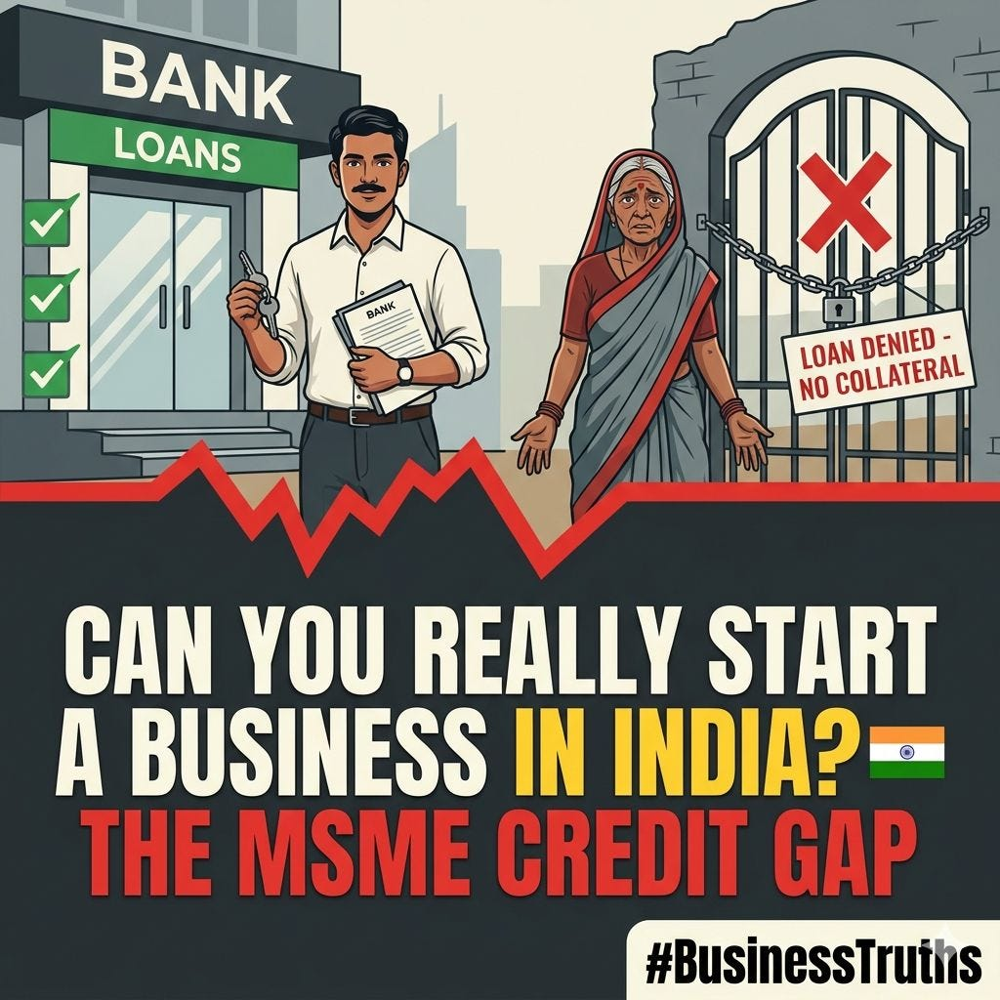
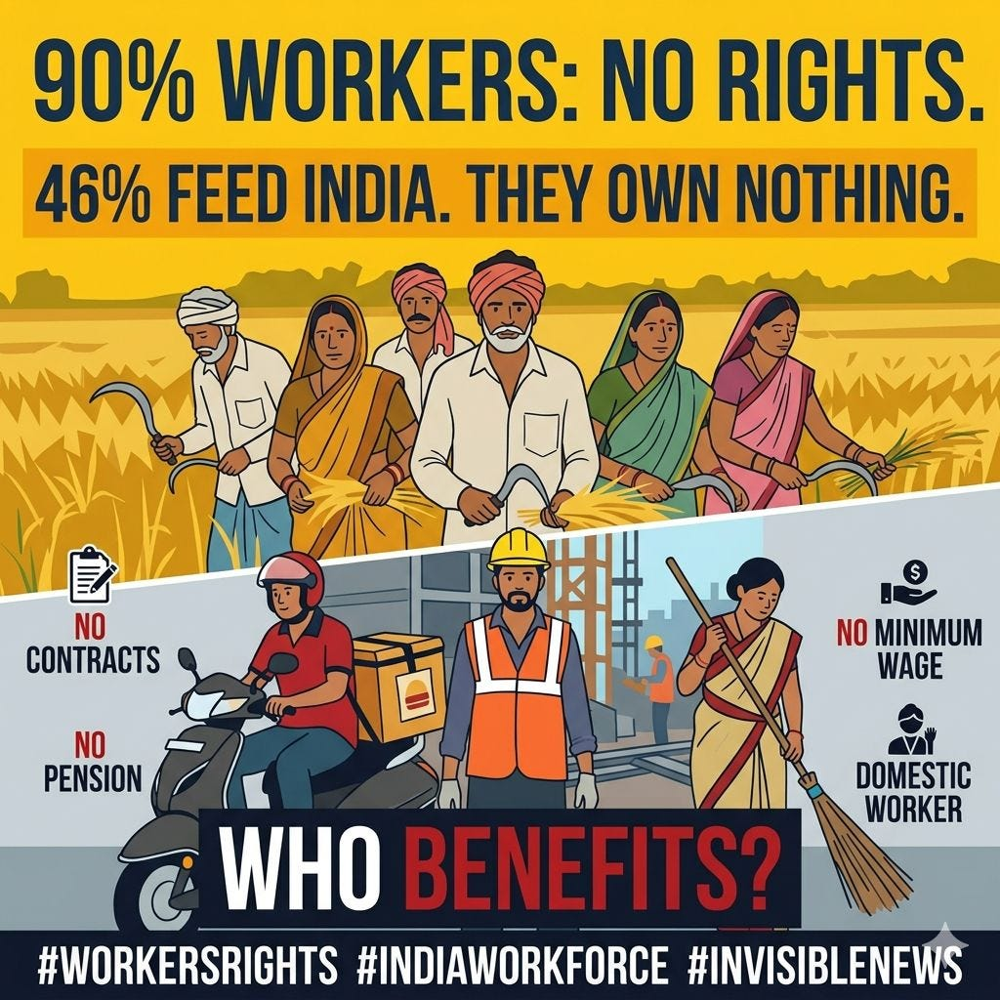
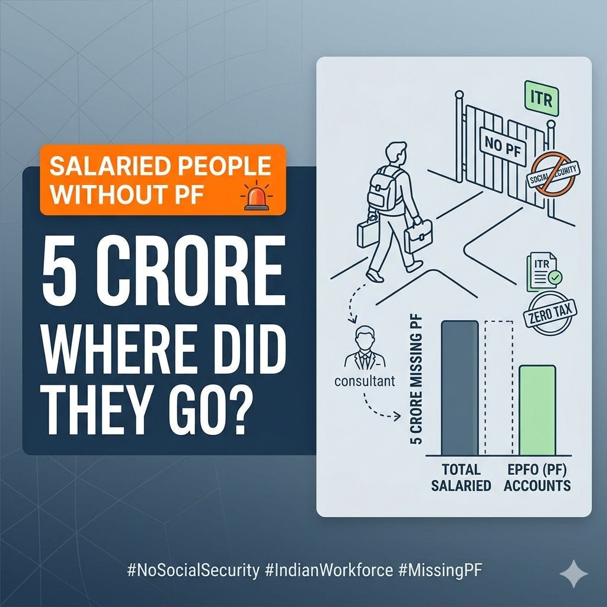
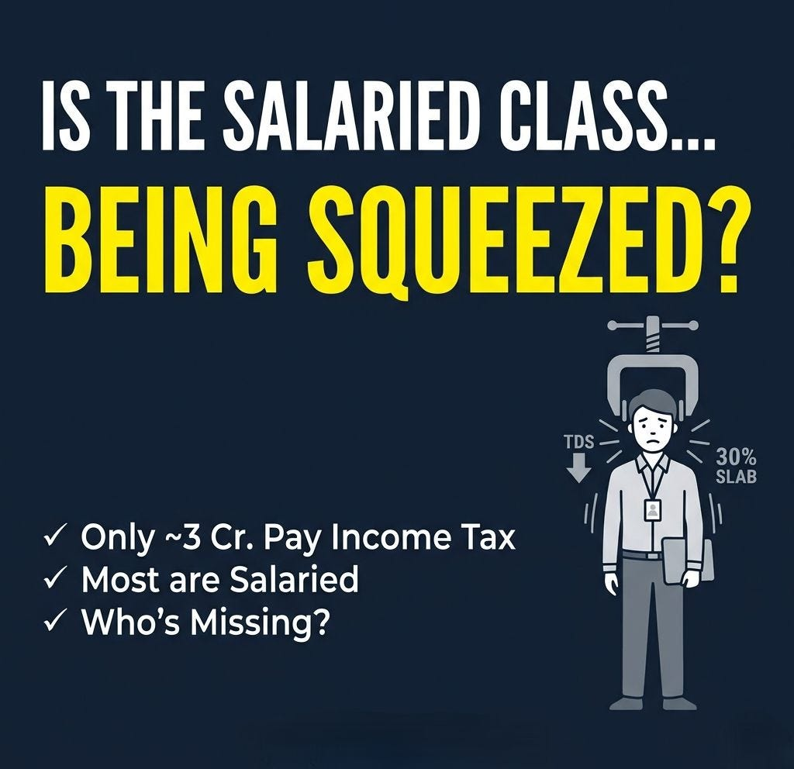

6. Systematic Exclusion
Business Hurdles

You cannot start a business in India.
Here's why
India's MSME numbers look like a success story.
📊 7.83 crore registered enterprises
📊 31.1% of GDP
📊 49% of exports
📊 32.8 crore jobs
But let's ask an uncomfortable question:
Who gets access to the credit that makes these businesses possible?
Because banks lend to those with:
· Land titles (which Dalit, Adivasi, and OBC families historically were denied)
· Existing CIBIL scores (which require prior access to formal finance)
· Collateral (urban property, not rural homesteads)
· Male guarantors (women are routinely asked to bring a husband or father)
The result is a massive ₹30 lakh crore credit gap.
And it falls disproportionately on:
➡️ Rural entrepreneurs – No bank branch nearby. Land is often oral or disputed.
➡️ Lower-caste individuals – Systemic denial of asset ownership means no collateral to offer.
➡️ Women – Required to produce male co-signers even for small MUDRA loans.
➡️ First-generation learners & workers – No family property, no financial literacy pipeline.
So when we say "MSMEs are the backbone of India's economy" – we must ask:
Whose backbone?
Because right now, the system is designed to work for the urban upper-caste male who already has family land, a bank relationship, and someone to co-sign.
The Dalit woman making pickles in a village?
The OBC welder renting a shed?
The Adivasi farmer trying to start a small agro-processing unit?
They don't lack skill or effort.
They lack privilege disguised as creditworthiness.
Real inclusion means:
✅ Moving away from collateral-based lending
✅ Aggressive rural branch expansion
✅ Gender-blind guarantee schemes (no male co-signer)
✅ Caste-disaggregated data on loan rejections
Until then, our MSME growth story will remain impressive but deeply unequal.
IMPORTANT COMMENTARY:-
- Jitendra - This is good ask.. can you cite your sources of information such as numbers above? And is that you assumed caste or gender as bias or you have some numerical evidences for them?
- Sajal - This data comes from the government’s Udyam Registration Portal (URP) and the Udyam Assist Platform (UAP). The caste or gender isn't bias .. it's a direct structural barrier to entry. Like see this article - https://www.policycircle.org/opinion/women-owned-msmes-india/ Now you might argue that MSME is dominated by reserved categories. But it leaves the nuance of how structural barriers work and who are being benefitted in real.
- RP - Wait when you apply for tender the EMD can be waived but three years experience or your have worked previously for any govt. Project or your last three years incometax return or some your turnover. Gem workes with keyword searches smart tenders manage keyword to get contract. Bank won't open account without GST one you are GST trap complaince will surly take you out of work and you are depositing returns your intitial money will go to CA finally you will sit and think kaaaash bharat viksit hota....
- Shruti - Caste disagregated data is VERY important
- Chandra - Indian credit system is basically a version of the caste system
Workers Rights

46% of workers feed India. They own almost nothing.
I pulled the latest government data on India's 56 crore workforce.
🌾 Agriculture – 46% of workforce
They grow your food. They get 15% of GDP. Zero social security. Seasonal hunger. Landless. Invisible.
🏭 MSMEs – 12.8 crore workers
No contracts. No paid leave. No EPFO. Women here earn 40% less than men. This is not formalization. This is exploitation with a fancy name.
🎤 Gig Economy – 1.2 crore workers
Algorithm as boss. No minimum wage. No overtime. One accident = destitution. Budget 2025 talks ID cards. Talk is cheap. Where's the law?
🏢 Formal Private Sector – barely 10%
Mostly upper caste, urban, male. If you're Dalit, Adivasi, Muslim, or a woman? Good luck.
🛡️ Government Jobs – only 3%
Reservations exist on paper. Creaming continues. SC/ST/OBC representation in top posts? Still a joke.
⚠️ 90% of India works informally.
No written contract. No maternity benefit. No pension. No dignity.
The mainstream narrative celebrates "rising formalization" and "startup jobs." Meanwhile, a domestic worker, a landless laborer, a beedi roller, a platform delivery rider - none of them exist in this glossy story.
Marginalized voices are not asking for charity.
They are asking for:
→ A universal social security floor.
→ Enforcement of minimum wages.
→ Union rights for gig and platform workers.
→ Caste and gender audits in formal sector hiring.
Data without justice is just propaganda.
Who benefits when we keep calling 90% informal workers "unorganized" and do nothing?
IMPORTANT COMMENTARY:-
- Abhishek - Biggest joke on those corporate folks who consider themselves manager and above labour while not managing single person under them. In reality they're also labour who were hypnotized with dream of promotion and suffer intense mental pressure.
- Nimi - Exactly problem structural dignity crisis hai…. Policy neglect unorganised hai… people celebrate gdp and startups but ignore the invisible labour that keeps economy functioning… aur unke liye zero security and dignity.
- Sajal - Kuch kiya hi nhi h in logo ne 🥲🥲 bss NCR aur baaki kuch cities ko develop karke bol diya ham developing ho gaye ... bhot haalat khraab h 🥲🥲 markets hi nhi bane to formalise kaha se honge 🥲🥲
- Yash - Great #cfbr this country never acknowledged the role of labour that's why it is not developed.
- Millind - Great
- Krishna - Are you aware that family income of urban household at the lower rung in Ahmedabad on average is not below 35000/- per month. And in above next catagory it is not less than 50000/-. Can't say about other places.
- Sanjay - Please don't discuss any real facts, as Hindu in danger. These same people vote in mass in the name of religion. they are the victim of govt as well as villain of the nation. they deserve the current state of the affair.
- Vidhya - Who owns the media and runs education system? Why are people not thinking critically?
- Chandan - It's very true. Today our economy is mostly driven by only 10% of the population and that indirectly drive 10- 15% population to live and contribute to economy. Rest are surviving on various temporary support systems only. There is no surprise. But our govt. claims on our big economy, growing economy ------ etc. The real picture is truly gloomy.
- Sajal - We are the ones who are raising such issues ... while media houses are busy in bootlicking gobhi ... Without state support, development planning will fail as it'll not reach to weaker sections of society .. our country's situation is very rough .. and people are asleep.
- Anand - I am afraid it is only going to get worse. The formal sector jobs may fall by 30-40%. That means lesser taxes, shrinking GDP. So no chance of any improvement in the foreseeable future.
- Sajal - Yes, there's no chance of any improvement unless we revolt against the government ... our silence is their victory ... what are they doing with our taxes .. thats what we should ask ... why we don't have infrastructure in tier 2 cities .. why mechanisms are not being built .. etc etc
- Dipesh - That is such a relevant data , people would see and scroll to next post , because not glamorous, and doesn't affect them . Ironically this is the brutal reality of our our country. No development can come and be effective if not holistic and inclusive. This is the Inclusivity that India actually needs . We can be a few trillions less but every citizen should have equitable share of economic growth. Thanks for sharing this .
- Sajal - The reason being we lack unity and hence bargaining power .. people are unaware of what mechanisms truly exist in developed nations .. media houses are not covering these issues .. that's why we're standing up ...
- Rizwan - That is why government distributes freebies for their vote bank. Which political party want to make them self sufficient or independent and why? Why to disturb vote bank?
- Rajan - And what does ownership means and do you or anyone own land Do you have right to property in india And The marginal farming system is collapsing What's the point ☝️
- Indu - Well stated! Shocking, deeply unsettling, a model favoring elite and jettisoning the makers of the nation, the informal sector workers
- Vishwanath - MSME workers have no paid leaves and no epf?? Where did you get this data from???
- Sudhir - Most of the workers are Contract Laborers. The Contractor has the liscence for EPF and ESi, but foes not cover them. All Benami. When calamity strikes God help.
- Arif - #Cheapestwork force
- Akshaya - I think your data needs correction as per the latest RBI KLEMS database Total employed is 64.33 cr & not 56 cr .
- Mahesh - I have seen many post ....but noone even entered deep into it...let's take a example if you have some work like digging a pit. Then ask a non formalized worker to do it. If we count his per day wages and whatever he earns in 26 or 30 days. The figure is shocking. It's more an fresher engineer or any degree holder in India. "Amazed & Shocked perhaps..!!" The educated peoples are bound and helpless which need a more focus..
- Jeelan - Consumerism at its best!
- Tapal - The AI and automation wave may transform economies faster than societies are prepared for. Routine and repetitive jobs are increasingly being handled by AI, robots, and autonomous systems. Drone-based delivery may reduce opportunities for gig workers, while large-scale mechanized farming may place small and marginal farmers under severe price pressure. AI may reduce clerical work, automation may shrink factory labor demand, and self-service technologies may reshape retail and logistics sectors. The real challenge is not technology itself, but whether society can adapt fast enough. Without:- reskilling, - AI-oriented education, - social protection, - entrepreneurship support, - and inclusive policies, economic inequality may widen sharply. The future debate is therefore not “AI vs humans,” but: “How to ensure technological progress benefits society broadly instead of economically displacing millions.”
- Alwyn - Vote wisely. Instead of complaining.
- Sushil - There must be someone working as your house keeping. How much right you gave to her or him? She keeps your home hygienic. Looks after your clothes. Cooks food for family. Sleeps on mat. How much sacrifices she does for your family. She deserves ownership of your home, at least one balcony. New Urban Naxal
- Singh - Great share 👍
- Abhinav - Recently, had a conversation with a farmer (someone close) who shared his experience dealing with the government - regarding raw turmeric - they made him sign long list of T&C (caring about possibilities where govt. could end up in a loss, not in farmers interest) - it wasn't like giving produce == take earnings - it's like "trust us" - they simply gave him no clarity over when to expect $ (asking WHEN: maybe in \~1 month, then \~3, at last "it could take around 6 months" - even the govt. servant was not sure). Realistically, a farmer isn't earning much, just hand-to-mouth earnings with lots of hardwork, dependencies & uncertainty of produce. - their conditions kept on changing in the entire process (we take the produce from your farm -to-> you deliver it to our location, your produce, your bill, your headache) - when farmer says not possible as it becomes a loss scenario, the response is direct - "then, you have wasted our time"... farmer - left with his packed produce ! A lot more happened (can't be explained in comments) but he concluded - he won't deal with govt. ever again, even if he goes to a loss. Now, we don't know where the bug lies, it just exists somewhere in this privileged-opaque-system.
- Rajesh - Where are communists then ? Formal or informal sectors people are very happy 😊. Look at our elections 😀
- Akash - Include corporate slaves also even after paying 30% tax we also own nothing.
Poverty Realty Check

🚨 5 crore "salaried" people have NO provident fund. Where did they go?
Let me simplify this for you.
🔹 Salaried people in India: 13.8 crore
🔹 People with EPFO (PF) account: 7.5 crore
That means → 5 crore salaried people are not getting provident fund. No employer contribution. No social security. Are they even on payroll? Or just "consultants" on paper?
Now check this 👇
🔹 ITR filed: \~9 crore
🔹 People who actually paid tax: \~3.6 crore
So → Over 5 crore filers paid ZERO tax. Because their income is so low, the government says "no need to tax you."
Read that again.
Most Indians filing returns are still too poor to pay tax. And 5 crore salaried people don't even get basic PF.
We love celebrating "8 crore ITR filings" and "growing formal workforce." But the reality is brutal:
📉 Poor = no tax
📉 Poor = no PF
📉 Poor = invisible in data
Stop celebrating filings. Start asking – why are so many Indians still this poor despite having a "salary"?
IMPORTANT COMMENTARY:-
- Arun - Supply-demand! Excessive overpopulation - thought of as a positive by the haves - the ticket for the 15-20% haves to get lots of cheap/near-free/for-peanut services. Not the story of now. The story of thousands of years. Of course, same was true for all the world until it started changing 200 odd years back. So the question is - Are we moving in the direction of catching up? Doesn't look like it because we are counting on glacial speed trickle down as our economic model. Are we at a place where an Indian "new deal" is possible? Remember the American New Deal began at the low point of the Great Depression.
- Sajal - Right now our model still rewards the top 15-20% with cheap services and calls it growth .. The rest are just surviving .. So no .. we aren’t catching up fast. And thinking ITR filing numbers mean prosperity is just self-deception.
- Arun - So back to the thesis that capitalism needs colonization to succeed. The West as early adopter got to do direct physical colonization of "others" (after decolonization, then indirect colonization via local elites). The late adopters like us have no such opportunities, so suggestion is "internal colonization" - 20% will colonize the 80%. Of course, the question mark on this thesis is exceptions like Singapore, S. Korea, Taiwan ....The big question is China - what will be different in the "Capitalism with Chinese characteristics".
- Yash - "Capitalism with Chinese characteristics" is very interesting bottom up approach. They have the concept of TVE (Town and Village Enterprise) .. Generally the Economic flow in developed country is : Germany/US/Europe : MSME -> Large Company In India we have : MNREGA .... disconnected ... MSME -> Large Company In China MNREGA type (they didn't need now) -> TVE -> MSME-> Large Companies. We miss the TVEs in India
- Arun - Interesting but I am not following the "->" - are you implying progression as in "MSME grow into large company"?
- Yash - MSME fulfills the demand of Large companies, TVEs fulfill the demands of MSMEs. Demand could be supply of raw material/components or basic processed material etc. That's what arrow represents. This is supply chain layering and this makes Chinese products cheaper and affordable as well as competitive globally in terms of pricing and now they are improving quality massively also.
- Arun - Being a cog in the value chain is certainly one option. But do you know if in China it is the only option? And weren't ancillaries in our case the same idea?
- Yash - TVEs emerged from villages and townships as a mass employment + production system, not just as subcontractors to big factories. Township and Village Enterprises (TVEs) were not just small suppliers like Indian ancillaries. They were a mass rural industrial system. Key differences: Built inside villages/townships, not just around cities or large firms Supported by LOCAL GOVERNMENT, not purely private MSMEs Absorbed agricultural surplus labor at scale Created a bottom-up manufacturing base, not just supplier networks Later upgraded into MSMEs, exporters, or large firms
- Arun - Got it! Do you think this was possible because the ground prepared by the initial flattening of hierarchy with the Chinese revolution?
- Yash - Definitely, this is because of Mao Zedong's efforts of flattening of hierarchy Started majorly from Qui Jin feminist revolution (1908) where for people actually started thinking about women's perspective (she was in intellectual who took arms against the patriarchy and challenge gender norms (men = public, women = private), rigid hierarchy and boycott the arrange marriage concept ) to Mao Zedong anti class struggle communist (land reforms, mass literacy) and later it yield to ban on arrange marriage (logistically possible because women started working outside) in 1952 and till late 1970's the literacy rate and education till class 10 improved massively and TFR also reached 2 which made economic growth possible under Deng Xiaoping's "Socialism with Chinese Characteristics" where they introduced concepts like TVEs and people agreed to the reform because "Deng said NO IDEOLOGY ONLY Pragmatism" after decades of ideological battles. Deng Xiaoping : “It doesn’t matter whether a cat is black or white, as long as it catches mice.” In context of India we need anti caste feminist movement and from TFR perspective we are very much ready for the reform.
- Arun - The rest I understood and agree with. But "In context of India we need anti caste feminist movement and from TFR perspective we are very much ready for the reform." - this I am not getting? Of course, I know the present feminist movement, if there is a real one in the country, is just a urban upper-caste/class thing. The popular theme nowadays I hear is "I am for female empowerment/equality but I am not a feminist".
- Yash - present feminist movement is upper middle class upper caste driven and anti caste movement is lower caste male driven. If you see society from lower caste rural female perspective then you'll see the entire problem correctly. Caste is preserved because lower caste male don't want to liberate lower caste female and upper caste female don't want to challenge the patriarchy. Caste hierarchy is always reflected in gender imbalance. whenever GOVT try to hide data related to caste always refer gender data. for example : if you see the data of female billionaire then the count of female billionaire == almost == ( ST SC OBC combined ) billionaire at the top and in corporate jobs or formal sector this is similar almost . The real problem is CASTE is a social stratification issue which is reduced to a DALIT issue (BIG Political Conspiracy or lack of Scientific temper where we say ANECDOTAL EVIDENCE is FACT, similar to white light made up of 7 colors can't be said before Newton Prism) as Dalit is the visible victim of Social stratification and people's logic is very much anecdotal in nature which is ridiculous. That's why it is never solved. Women safety can't be solved without addressing CASTE so it's in favor of all.
- Arun - Agree without "caste annihilating (and it is now the nano-hierarchical mind drunk on a toxic cocktail of caste, feudalism and class, shaken but not stirred, which is forever busy arranging each one it comes across as above or below)" other progressive social reforms will stay trapped in it and therefore never reach potential. Challenge is that 75+ years on we don't seem to be on the road of that annihilation.
- Yash - Great #cfbr this DATA shows that despite 13 crore formal sector employment, only 3.6 crore people have sufficient purchasing power and career growth, the opportunity for social mobility is very low in India and very Urban centric too.
- Prabhash - Great post, Sajal! You’ve hit the nail on the head regarding the "invisible" workforce. It’s easy to get lost in macro-growth headlines, but these figures highlight the massive gap between being 'employed' and having actual social security. Thanks for bringing much-needed nuance to the conversation on India’s formalization.
Helpless Working Class

The salaried class is not "contributing to nation building."
They are being squeezed out.
Let the data speak:
📌 Only \~3 crore Indians pay income tax.
Out of that:
👨💼 Salaried employees – 1.5 to 1.8 crore
🛒 Business & self-employed – 70 to 90 lakh
📈 Investors – 15 to 30 lakh
🏢 Companies – 15 to 25 lakh
Now ask yourself:
👉 Why is the salaried class the largest group?
Because TDS leaves them no choice. Every rupee is tracked. No hiding.
👉 Where are the rest?
Business owners? Traders? Real estate? Cash-heavy sectors?
Largely outside the tax net - or paying far less than they should.
And geography?
Mumbai, Delhi, Bengaluru, Hyderabad, Pune, Chennai, Ahmedabad.
The urban middle class in these cities carries the nation's tax burden - while large parts of the country contribute almost nothing.
The result?
The same 1.5–1.8 crore salaried Indians -
· Pay tax at source
· Can't claim cash expenses
· Can't "show less income"
· Get stuck in the 30% slab while saving little
Meanwhile, others structure, underreport, or simply don't file.
The government calls this a "widening tax base."
In reality, they've just tightened the net around the only people who can't escape.
IMPORTANT COMMENTARY:-
- Shruti - But the only thing the middle class feels comfy doubling down on are the working class, BPL groups and the "freebies" they supposedly get
- Sajal - Middle class have no wat out and they've created their own web by kneeling down upon the capitalists. 🤡
- Shruti - typical petit bourgeoisie behaviour I guess
- Girish - Mr. Arvind Virmani (NITI Aayog member) has said salaries have not matched up with rising inflation since 7 years. This has reduced the purchasing power and led the middle class to be dependent on credit.
- Sajal - Of course .. and thanks to weak labour laws .. they mostly have no social security benefits, no pf .. nothing 🤡
- Yash - Great #cfbr finally we have reached the core LinkedIn India's userbase questions on Sajal Garg profile . Without understanding previous posts, it's impossible to understand and make sense out of issues of Urban India Taxpayer class, so please have a look at previous posts.
- Gothanda - Problem with these type of writing is they conveniently hide the fact that it is poor who fund the Government mainly. More than 50% of tax revenue come from indirect tax which even daily wage labourers who are paid less than minimum wage pay to get survival goods and services. others wise they will die in streets. Can you believe that India tax Rice?? Ancient Indians fought against tax on salt but contemporary low lifes are OK with tax on food items. Even within that, North Indian Aryan people eating wheat is not taxed but South Indian Dravidian people eating rice is taxed. A explicit xenophobic behavior. . It is the cruelest ruling class came to power in Indian Subcontinent in the memorable history.
- Yash - this is also an experimental post, to see the biases of urban Indians 😅
- Dasaratha - If that is the case entire population is paying those. Then differentiation with the working class. Only collect the indirect tax
- Gothanda - Are you trying to equate Ambani with your panchayat garbage collector?? 🤔 Taxation should be proportionate to pain endurance, not absolute value for equitable society which your Economists / ruling class did not teach you. Taxation is not mechanical activity but a State craft. To indulge, you must have love for fellow human being, environment, understanding of history, vision and agenda for future, etc. Because of people like you who support such pervasive practice, they tax diamond 5% but washing machine 18%.
- Dasaratha - We don't support that kind of taxation instead we , the salary class are most affected people. But, people like you sitting on top always try to evade taxes
- Rishi - Always, but engage with a Good CA ,he,she will help you as per law of the Land of Income Tax
- Somu - India’s salaried class often feels overburdened because taxes are deducted transparently at source, while large parts of the informal economy remain outside the direct tax net. The issue isn’t just “only 3 crore taxpayers” — it’s low income levels, exemptions, cash transactions, and weak compliance across sectors